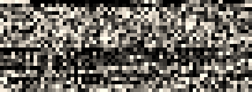
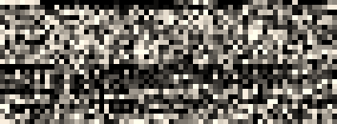

Certificate Binary Posters (Part Six)
One thing that is noticeably, different, from, previous, posters is that these formats are not encoded in base64, they are binary files. Most of the other files can be interpreted by cryptosystems in both binary and base64, and we typically transport them by first encoding them in base64.
In these formats, in order to show the binary in a visual representation I used Netpbm (Network portable bitmap format) with the PGM (Portable Graymap) format to translate the hexadecimal values into a format easier for humans to visualize. (A more fun format would be to use emoji, but that would not fit quite as well with the rest of the poster).
 vs
vs
Microsoft came up with the pfx format (which was later changed slightly and reworked as PKCS #12), and recieved much criticism due to the complex nature, terminology, and internal formats. At first glance the p12 format seems to be fairly complex, it includes many wrappers of wrappers that enclose keys, certificates, and descriptive data. The reason for all of those is that pfx files can contain (according to Gutmann), "CRL's, keys, names, cookie recipes, dirty laundry, spare lightbulbs, and the kitchen sink". However, for storing certificates and a private key in pfx, it is really just a list of pairs of encrypted certificate chain and the associated encrypted key.
The keys and certificates in the pfx are stored in separate containers and encrypted with different keys and most of the time different algorithms also.
When using Windows, there really is no way around the algorithm used. The default is to encrypt the certificates with RC2 and the private key with 3DES, this means that the highest strength you would ever be able to achieve is equivalent to 3DES. However, on OpenSSL, you can specify the encryption algorithm for both the key and the certificates to use the stronger AES-256 by adding additional flags:
-certpbe AES-256-CBC -keypbe AES-256-CBC
Of course, at the moment, the strength is predominantly up to the password used as the best way to defeat even the Windows version is to use a password list. This is somewhat slowed by the number of rounds the key derivation algorithm is passed through; 2000 on pfx files generated via Windows and 2048 by default from OpenSSL.
Java has its own proprietary format that it named JKS, which stands for Java KeyStore.
While the p12 format is binary encoded ASN.1, jks format files are a strange mix of binary and ASN.1. The file begins with a "magic number" as many other binary files do. After that comes a list of different keys or certificates. JKS files are also quite extensible and are able to hold many objects, including lists of chains, certificates, roots, as well as lone private keys. The number of keystore entries is defined at the beginning of the file and the data is listed in a serialized manner. For this example of just an x.509 certificate and key, the entry contains: a plaintext alias, encrypted private key, and plaintext chain.
Unlike pkcs12, you cannot choose the algorithm used to protect the keys, so everyone is stuck with a proprietary implementation of a password based key derivation scheme using MD5 to create a 3DES key.
The moral of the story, is use a long and complex password for either of these formats. Even so, if your keystore does get out, you will need to revoke your certificate. More on that next post.